-
Kerna
 Home
Home- Configuração
 CSS Classes
CSS Classes- Roteiro
- GitHub
Kerna documentação
Kerna documentação
HomeCSS ClassesA primeira coisa sobre Kerna que você provavelmente deve saber é que, com isso, seu visual novel é uma página da web primeiro e um jogo depois. Isso significa que o Kerna foi criado especificamente para a web, colocando coisas como capacidade de resposta (o fato de seu jogo se adaptar a qualquer tela ou tamanho de dispositivo) primeiro. Você não precisa necessariamente pensar em seu jogo dessa maneira também, mas certamente tirará o máximo proveito de Kerna se o fizer.